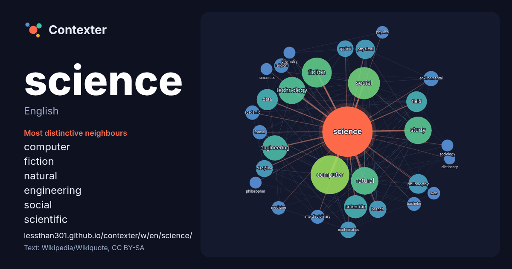

English · popular word
science
The words found around it in 1864 instances from English Wikipedia, Wikiquote and Hacker News.

Most distinctive neighbours
- computer 95×
- fiction 73×
- natural 42×
- engineering 41×
- social 39×
- scientific 38×
- technology 36×
- philosophy 31×
- discipline 28×
- physical 26×
- mathematics 25×
- data 24×
- study 23×
- interdisciplinary 22×
- applied 21×
- bachelor 18×
- formal 18×
- environmental 18×
- branch 17×
- religion 16×
× = how many times more often than in general English Wikipedia text.
Most frequent neighbours
- computer 170
- social 117
- fiction 102
- natural 86
- study 85
- technology 84
- engineering 72
- scientific 61
- arts 53
- data 51
- field 49
- philosophy 44
- physical 43
- life 42
- university 40
- school 39
- history 36
- branch 34
- research 34
- discipline 33
In context
- Science is a systematic discipline that builds and organises knowledge in the form of testable explanations about nature and society. It is driven by Wikipedia snippets · Science
- Look up science in Wiktionary, the free dictionary. Science is a systematic method for obtaining knowledge that is natural, measurable or consisting of Wikipedia snippets · Science (disambiguation)
- Science is the peer-reviewed academic journal of the American Association for the Advancement of Science (AAAS) and one of the world's top academic journal … Wikipedia snippets · Science (journal)
- Natural science or empirical science is a branch of science concerned with the description, understanding, and prediction of natural phenomena, based Wikipedia snippets · Natural science
- Political science (sometimes abbreviated as poli sci) is a field which aims to study the scientific aspect of politics. It deals with systems of governance Wikipedia snippets · Political science
- Science of Team Science (SciTS) is a methodological field that focuses on understanding and improving cross-disciplinary collaboration in research. The Wikipedia snippets · Science of team science
- Christian Science is a nontrinitarian Christian religion whose adherents are members of the Church of Christ, Scientist. Church members are known as Christian Wikipedia snippets · Christian Science
- Fundamental areas of computer science Computer science is the study of computation, information, and automation, together with their associated phenomena Wikipedia snippets · Computer science
More English words
- art
- autumn
- bell
- bread
- bridge
- cat
- city
- climate
- clock
- death
- desert
- dog
- family
- food
- forest
- garden
- god
- gold
- health
- heart
- history
- honey
- horse
- island
- language
- life
- map
- mirror
- money
- mother
- mountain
- nature
- power
- rain
- road
- salt
- shadow
- silence
- song
- star
- storm
- summer
- tea
- time
- train
- truth
- water
- winter
- work
Precomputed on 2026-10-09 with default settings (±5 words, medium corpus). The interactive map can refresh it with live data.